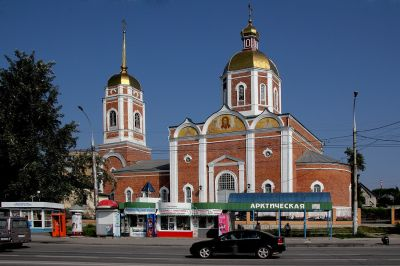
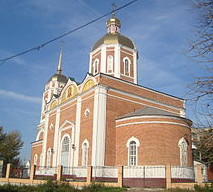

Достопримечательности Липецка


Храм Рождества Христова (Липецк)
Храм Рождества Христова — православный храм в городе Липецке на улице 9 Января.
Строительство храма
В 1857 году крестьяне подали в Тамбовскую и Козловскую епархию просьбу о строительстве нового храма в селе Студёнки (ныне в черте города Липецка). В 1859 году разрешение на постройку было получено. К 1865 году черновая стройка была готова. В 1869 постройка была завершена. До этого храм посетили две комиссии.
В храме действует воскресная школа.
Изображения:
 
Храм Рождества Христова на карте: